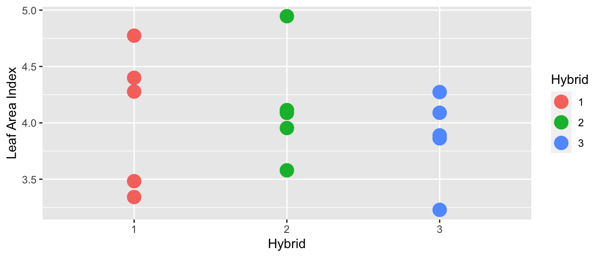
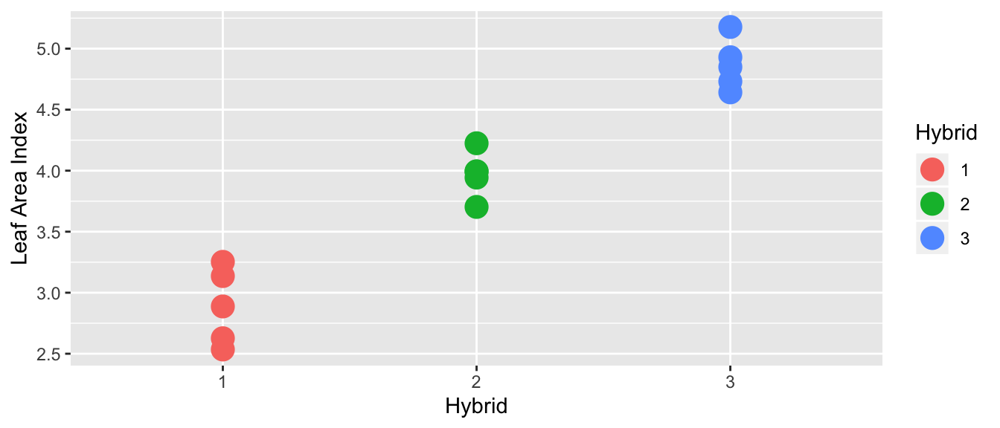
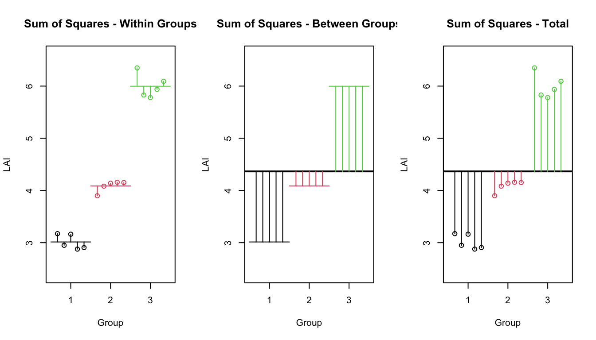
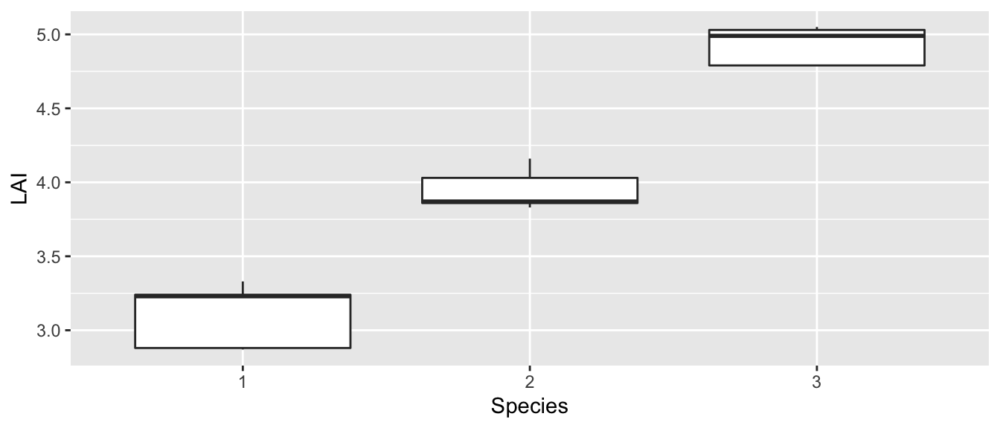
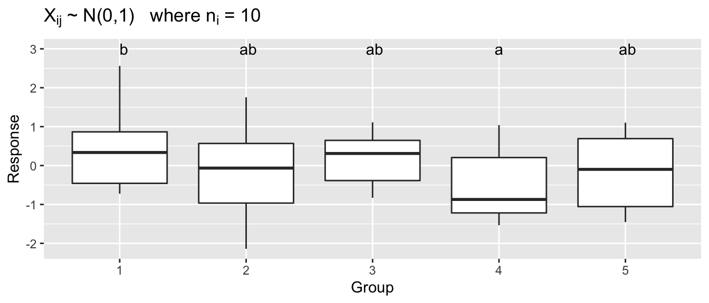
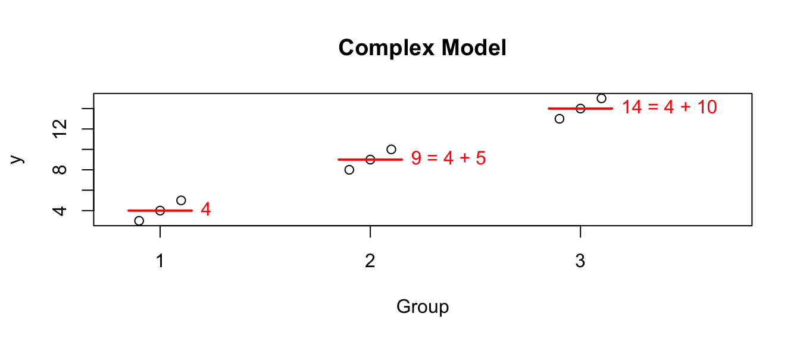
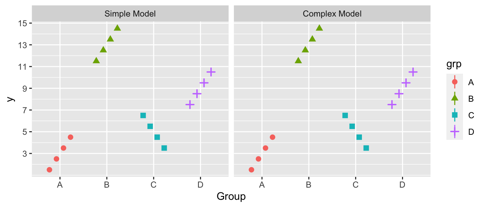
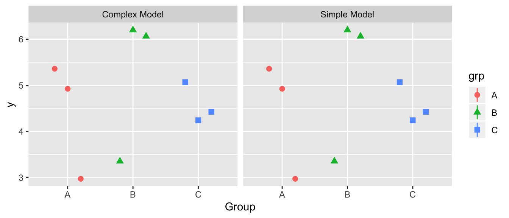

Chapter 9 Analysis of Variance (ANOVA)
We are now moving into a different realm of statistics. We have covered enough probability and the basic ideas of hypothesis tests and p-values to move onto the type of inference that you took this class to learn. The heart of science is comparing and evaluating which hypothesis is better supported by the data.
To evaluate a hypothesis, scientists will write a grant, hire grad students (or under-grads), collect the data, and then analyze the data using some sort of model that reflects the hypothesis under consideration. It could be as simple as “What is the relationship between iris species and petal width?” or as complex as “What is the temporal variation in growing season length in response to elevated CO\(_{2}\) in desert ecosystems?”
At the heart of the question is which predictors should be included in my model of the response variable. Given twenty different predictors, I want to pare them down to just the predictors that matter. I want to make my model as simple as possible, but still retain as much explanatory power as I can.
Our attention now turns to building models of our observed data in a fashion that allows us to ask if a predictor is useful in the model or if we can remove it. Our model building procedure will be consistent:
- Write two models, one that is perhaps overly simple and another that is a complication of the simple model.
- Verify that the assumptions that are made in both models are satisfied.
- Evaluate if the complex model explains significantly more of the variability in the data than the simple model.
Our goal here isn’t to find “the right model” because no model is right. Instead our goal is to find a model that is useful and helps me to understand the science.
We will start by developing a test that helps me evaluate if a model that has a categorical predictor variable for a continuous response should have a mean value for each group or just one overall mean.
9.1 Model
The two-sample t-test provided a convenient way to compare the means from two different populations and test if they were equal. We wish to generalize this test to more than two different populations. Later when we have more tools in our statistical tool box, it is useful to notice that ANOVA uses a categorical variable (which group) to predict a continuous response.
Suppose that my data can be written as \[Y_{ij}=\mu_{i}+\epsilon_{ij}\;\;\;\;\;\textrm{where}\;\;\epsilon_{ij}\stackrel{iid}{\sim}N\left(0,\,\sigma\right)\] and \(\mu_{i}\) is the mean of group \(i\) and \(\epsilon_{ij}\) are the deviations from the group means. Let the first subscript denote which group the observation is from \(i\in\{1,\dots k\}\) and the second subscript is the observation number within that sample. Each group has its own mean \(\mu_{i}\) and we might allow the number of observations in each group \(n_{i}\) to be of different across the populations.
Assumptions: 1. The error terms come from a normal distribution 2. The variance of each group is the same 3. The observations are independent 4. The observations are representative of the population of interest
In general I want to test the hypotheses \[\begin{aligned} H_{0} &: \mu_{1}=\mu_{2}=\dots=\mu_{k} \\ H_{a} &: \textrm{at least on mean is different than the others} \end{aligned}\]
Example 1. Suppose that we have three hybrids of a particular plant and we measure the leaf area for each hybrid.
In the following graph, there does not appear to be a difference between the hybrid means:

However, in this case, it looks like there is a difference in the means of each hybrid:

What is the difference between these two?
If the variance between hybrids is small compared the variance within a hybrid variance is huge compared, then I would fail to reject the null hypothesis of equal means (this would be the first case). In this case, the additional model complexity doesn’t result in more accurate model, so Occam’s Razor would lead us to prefer the simpler model where each group has the same mean.
If there is a large variance between hybrids compared to the variance within a hybrid then I’d conclude there is a difference (this would be the second case). In this case, I prefer the more complicated model with each group having separate means.
9.2 Theory
Notation:
- \(n=n_{1}+n_{2}+\dots+n_{k}\) as the total number of observations
- \(\bar{y}_{i\cdot}=\frac{1}{n_{i}}\sum_{j=1}^{n_{i}}y_{ij}\) as the sample mean from the \(i\)th group
- \(\bar{y}_{\cdot\cdot}\) be the mean of all the observations.
Regardless of if the null hypothesis is true, the following is an estimate of \(\sigma^{2}\). We could use a pooled variance estimate similar to the estimator in the pooled two-sample t-test. We will denote this first estimator as the within-group estimate because the sums in the numerator are all measuring the variability within a group. \[\begin{aligned} s_{W}^{2} &= \frac{\sum_{i=1}^{k}\sum_{j=1}^{n_{k}}\left(y_{ij}-\bar{y}_{i\cdot}\right)^{2}}{n-k} \\ &= \frac{\sum_{j=1}^{n_{1}}\left(y_{1j}-\bar{y}_{1\cdot}\right)^{2}+\sum_{j=1}^{n_{2}}\left(y_{2j}-\bar{y}_{2\cdot}\right)^{2}+\dots+\sum_{j=1}^{n_{k}}\left(y_{kj}-\bar{y}_{k\cdot}\right)^{2}}{\left(n_{1}-1\right)+\left(n_{2}-1\right)+\dots+\left(n_{k}-1\right)} \\ &= \frac{\left(n_{1}-1\right)s_{1}^{2}+\left(n_{2}-1\right)s_{2}^{2}+\dots+\left(n_{k}-1\right)s_{k}^{2}}{n-k} \end{aligned}\]
If the null hypothesis is true and \(\mu_{1}=\dots=\mu_{k}\), then a second way that I could estimate the \(\sigma^{2}\) term is using the sample means. If \(H_{0}\) is true then each sample mean has sampling distribution \(\bar{Y}_{i\cdot}\sim N\left(\mu,\frac{\sigma^{2}}{n_{i}}\right)\). In the simple case where \(n_{1}=n_{2}=\dots=n_{k}\) then the sample variance of the \(k\) sample means \(\bar{y}_{1},\bar{y}_{2},\dots,\bar{y}_{k}\) has expectation \(\sigma^{2}/n_{i}\) and could be used to estimate \(\sigma^{2}\). In the case of unequal sample sizes, the formula will be slightly different.
\[s_{B}^{2}=\frac{1}{k-1}\sum_{i=1}^{k}n_{i}\left(\bar{y}_{i\cdot}-\bar{y}_{\cdot\cdot}\right)^{2}\]
Under the null hypothesis, these two estimates are both estimating \(\sigma^{2}\) and should be similar and the ratio \(s_{B}^{2}/s_{W}^{2}\) follows an F-distribution with numerator degrees of freedom \(k-1\) and denominator degrees of freedom \(n-k\) degrees of freedom. We define our test statistic as \[f=\frac{s_{B}^{2}}{s_{W}^{2}}\]
In the case that the null hypothesis is false (non-equal means \(\mu_{1},\mu_{2},\dots,\mu_{k}\)), \(s_{B}^{2}\) should be much larger than \(s_{W}^{2}\) and our test statistic \(f\) will be very large and so we will reject the null hypothesis if \(f\) is greater than the \(1-\alpha\) quantile from the F-distribution with \(k-1\) and \(n-k\) degrees of freedom. If \(s_{B}^{2}\) is small, then the difference between the group means and the overall means is small and we shouldn’t reject the null hypothesis. So this F-test will always be a one sided test, rejecting only if f is large. \[\textrm{p-value}=P\left(F_{k-1,\,n_{t}-k}>f\right)\]
9.2.1 Anova Table
There are several sources of variability that we are dealing with.
SSW: Sum of Squares Within - This is the variability within sample groups. \[SSW=\sum_{i=1}^{k}\sum_{j=1}^{n_{i}}\left(y_{ij}-\bar{y}_{i\cdot}\right)^{2}\;\;\;\;\;\;\;\;df_{W}=n-k\]
SSB: Sum of Squares Between - This is the variability between sample groups. \[SSB=\sum_{i=1}^{k}n_{i}\left(\bar{y}_{i\cdot}-\bar{y}_{\cdot\cdot}\right)^{2} \;\;\;\;\;\;\;\;\;df_{B}=k-1\]
SST: Sum of Squares Total - This is the total variability in the data set. It has an associated df=n-1 because under the null hypothesis there is only one mean \(\mu\). \[SST=\sum_{i=1}^{k}\sum_{j=1}^{n_{j}}\left(y_{ij}-\bar{y}_{\cdot\cdot}\right)^{2} \;\;\;\;\;\;\;\;\;df_{T}=n-1\]
## `summarise()` ungrouping output (override with `.groups` argument)
An anova table is usually set up the in the following way (although the total row is sometimes removed):
| Source | df | Sum of Sq. | Mean Sq. | F-Stat | p-value |
|---|---|---|---|---|---|
| Between | \(k-1\) | \(SSB\) | \(s^2_B=SSB/df_B\) | \(f=s^2_B/s^2_W\) | \(P(F_{k-1,n-k}\ge f)\) |
| Within | \(n-k\) | \(SSW\) | \(s^2_W=SSW/df_W\) | ||
| Total | \(n-1\) | \(SST\) |
It can be shown that \(SST=SSB+SSW\) and we can think about what these sums actually mean by returning to our idea about simple vs complex models.
9.2.2 ANOVA using Simple vs Complex models.
The problem under consideration can also be considered as a question about how complicated of a model should we fit to the observed data. If a more complicated model doesn’t “fit” the data better, then I am better of keeping a simple model and view of the process at hand.
Upon the second reading of these notes, the student is likely asking why we even bothered introducing the ANOVA table using SST, SSW, SSB. The answer is that these notations are common in the ANOVA literature and that we can’t justify using an F-test without variance estimates. Both interpretations are valid, but the Simple/Complex models are a better paradigm as we move forward.
Simple Model
The simple model is \[Y_{ij}=\mu+\epsilon_{ij}\;\;\;\textrm{where}\;\epsilon_{ij}\stackrel{iid}{\sim}N\left(0,\sigma^{2}\right)\] and has each observation having the same expectation \(\mu\). Thus we use the overall mean of the data \(\bar{y}_{\cdot\cdot}\) as the estimate of \(\mu\) and therefore our error terms are \[e_{ij}=y_{ij}-\bar{y}_{\cdot\cdot}\] The sum of squared error associated with the simple model is thus \[\begin{aligned} SSE_{simple} &= \sum_{i=1}^{k}\sum_{j=1}^{n_{i}}e_{ij}^{2} \\ &= \sum_{i=1}^{k}\sum_{j=1}^{n_{i}}\left(y_{ij}-\bar{y}_{\cdot\cdot}\right)^{2} \\ &= SST \end{aligned}\]
Complex Model
The more complicated model \[Y_{ij}=\mu_{i}+\epsilon_{ij}\;\;\;\textrm{where}\;\epsilon_{ij}\stackrel{iid}{\sim}N\left(0,\sigma^{2}\right)\] has each observation having the expectation of its group mean \(\mu_{i}\). We’ll use the group means \(\bar{y}_{i\cdot}\) as estimates for \(\mu_{i}\) and thus the error terms are \[e_{ij}=y_{ij}-\bar{y}_{i\cdot}\] and the sum of squared error associated with the complex model is thus \[\begin{aligned} SSE_{complex} &= \sum_{i=1}^{k}\sum_{j=1}^{n_{i}}e_{ij}^{2} \\ &= \sum_{i=1}^{k}\sum_{j=1}^{n_{i}}\left(y_{ij}-\bar{y}_{i\cdot}\right)^{2} \\ &= SSW \end{aligned}\]
Difference
The difference between the simple and complex sums of squared error is denoted \(SSE_{diff}\) and we see \[\begin{aligned} SSE_{diff} &= SSE_{simple}-SSE_{complex} \\ &= SST-SSW \\ &= SSB \end{aligned}\] Note that \(SSE_{diff}\) can be interpreted as the amount of variability that is explained by the more complicated model vs the simple. If this \(SSE_{diff}\) is large, then we should use the complex model. Our only question becomes “How large is large?”
First we must account for the number of additional parameters we have added. If we added five parameters, I should expect to account for more variability that if I added one parameter, so first we will divide \(SSE_{diff}\) by the number of added parameters to get \(MSE_{diff}\) which is the amount of variability explained by each additional parameter. If that amount is large compared to the leftover from the complex model, then we should use the complex model.
These calculations are preformed in the ANOVA table, and the following table is identical to the previous ANOVA table, and we have only changed the names given to the various quantities.
| Source | df | Sum of Sq. | Mean Sq. | F-Stat | p-value |
|---|---|---|---|---|---|
| Difference | \(k-1\) | \(SSE_{diff}\) | \(MSE_{diff}=\frac{SSE_{diff}}{k-1}\) | \(f=\frac{MSE_{diff}}{MSE_{complex}}\) | \(P(F_{k-1,n-k}\ge f)\) |
| Complex | \(n-k\) | \(SSE_{complex}\) | \(MSE_{complex}=\frac{SSE_{complex}}{n-k}\) | ||
| Simple | \(n-1\) | \(SSE_{simple}\) |
9.2.3 Parameter Estimates and Confidence Intervals
As usual, the group sample means \(\bar{y}_{i\cdot}\) is a good estimator for the mean of group \(\mu_{i}\).
But what about \(\sigma^{2}\)? If we conclude that we should use the complex model, and because one of our assumptions is that each group has equal variance, then I should use all of the residual terms \(e_{ij}=y_{ij}-\bar{y}_{i\cdot}\) in my estimation of \(\sigma\). In this case we will use \[\hat{\sigma}^{2}=s_{W}^{2}=MSE_{complex}=\frac{1}{n-k}\sum_{i=1}^{k}\sum_{j=1}^{n_{i}}\left(y_{ij}-\bar{y}_{i\cdot}\right)^{2}\] as the estimate of \(\sigma^{2}\). Notice that this is analogous to the pooled estimate of the variance in a two-sample t-test with the assumption of equal variance.
Therefore an appropriate confidence interval for \(\mu_{i}\) is \[\bar{y}_{i\cdot}\pm t_{\,n-k}^{1-\alpha/2}\left(\frac{\hat{\sigma}}{\sqrt{n_{i}}}\right)\]
9.3 Anova in R
First we must define a data frame with the appropriate columns. We start with two vectors, one of which has the leaf area data and the other vector denotes the species. Our response variable must be a continuous random variable and the explanatory is a discrete variable. In R discrete variables are called factors and can you can change a numerical variable to be a factor using the function factor().
The analysis of variance method is an example of a linear model which can be fit in a variety of ways. We can use either lm() or aov() to fit this model, and in these notes we concentrate on using lm(). The first argument to this function is a formula that describes the relationship between the explanatory variables and the response variable. In this case it is extremely simple, that LAI is a function of the categorical variable Species.
data <- data.frame(LAI = c(2.88, 2.87, 3.23, 3.24, 3.33,
3.83, 3.86, 4.03, 3.87, 4.16,
4.79, 5.03, 4.99, 4.79, 5.05),
Species = factor( rep(1:3, each=5) ) )
str(data)## 'data.frame': 15 obs. of 2 variables:
## $ LAI : num 2.88 2.87 3.23 3.24 3.33 3.83 3.86 4.03 3.87 4.16 ...
## $ Species: Factor w/ 3 levels "1","2","3": 1 1 1 1 1 2 2 2 2 2 ...As is always good practice, the first thing we should do is graph our data.

It looks like the equal variance question isn’t a worry and it certainly appears that the mean value for each species is not the same. I expect that we will certainly prefer the complex model in this case.
The lm() command is the command that does all the calculations necessary to fit an ANOVA model. This command returns a list object that is useful for subsequent analysis and it is up to the use to know what subsequent functions to call that answer questions of interest.
In the call to lm() we created a formula. Formulas in R always are of the form Y ~ X where Y is the dependent variable and the X variables are the independent variables.
Before we examine the anova table and make any conclusion, we should double check that the anova assumptions have been satisfied. To check the normality assumption, we will look at the qqplot of the residuals \(e_{ij}=y_{ij}-\bar{y}_{i\cdot}\). These residuals are easily accessed in R using the resid function on the model object. To check the variance assumption, we will examine the boxplot of the data
## Warning: `arrange_()` is deprecated as of dplyr 0.7.0.
## Please use `arrange()` instead.
## See vignette('programming') for more help
## This warning is displayed once every 8 hours.
## Call `lifecycle::last_warnings()` to see where this warning was generated.
The qqplot doesn’t look too bad, with only two observations far from the normality line. To get the Analysis of Variance table, we’ll extract it from the model object using the function anova().
## Analysis of Variance Table
##
## Response: LAI
## Df Sum Sq Mean Sq F value Pr(>F)
## Species 2 8.2973 4.1487 147.81 3.523e-09 ***
## Residuals 12 0.3368 0.0281
## ---
## Signif. codes: 0 '***' 0.001 '**' 0.01 '*' 0.05 '.' 0.1 ' ' 1Notice that R does not give you the third line in the ANOVA table. This was a deliberate choice by the Core Development Team of R, but one that is somewhat annoying. Because the third line is just the total of the first two, it isn’t hard to calculate, if necessary.
The row labeled Species corresponds to the difference between the simple and complex models, while the Residuals row corresponds to the complex model. Notice that \(SSE_{diff}\) is quite large, but to decide if it is large enough to justify the use of the complex model, we must go through the calculations to get the p-value, which is quite small. Because the p-value is smaller than any reasonable \(\alpha\)-level, we can reject the null hypothesis and conclude that at least one of the means is different than the others.
But which mean is different? The first thing to do is to look at the point estimates and confidence intervals for \(\mu_{i}\). These are
\[\hat{\mu}_{i} = \bar{y}_{i\cdot}\]
\[\hat{y}_{i\cdot}\pm t_{n-k}^{1-\alpha/2}\left(\frac{\hat{\sigma}}{\sqrt{n_{i}}}\right)\]
and can be found using the coef() and confint() functions.
# To get coefficients in the way we have represented the
# complex model (which we will call the cell means model), we
# must add a -1 to the formula passed to lm()
# We'll explore this later in this chapter.
model.2 <- lm(LAI ~ Species - 1, data=data)
coef(model.2)## Species1 Species2 Species3
## 3.11 3.95 4.93# alternatively we could use the emmeans package
# using either model representation
emmeans::emmeans(model, ~Species)## Species emmean SE df lower.CL upper.CL
## 1 3.11 0.0749 12 2.95 3.27
## 2 3.95 0.0749 12 3.79 4.11
## 3 4.93 0.0749 12 4.77 5.09
##
## Confidence level used: 0.95Are the all the species different from each other? In practice I will want to examine each group and compare it to all others and figure out if they are different. How can we efficiently do all possible t-tests and keep the correct \(\alpha\) level correct?
9.4 Multiple comparisons
Recall that for every statistical test there is some probability of making a type I error and we controlled that probability by setting a desired \(\alpha\)-level. If I were to do 20 t-tests of samples with identical means, I would expect, on average, that one of them would turn up to be significantly different just by chance. If I am making a large number of tests, each with a type I error rate of \(\alpha\), I am practically guaranteed to make at least one type I error.
set.seed(-1035) # So that I get the same dataset each time I build the book.
k <- 5 ; n <- 10
mydata <- data.frame(mu=rep(0,k*n), Grp=factor(rep(1:k, each=n))) %>%
mutate( Y=mu+rnorm(k*n), Group=Grp)
letterdata <- lm( Y~Grp, data=mydata ) %>%
emmeans::emmeans( ~ Grp) %>%
multcomp::cld( Letters=letters, adjust='none' ) %>% # Force no p-value adjustment
dplyr::select(Grp, .group) %>%
dplyr::mutate( Y = 3 )# Visualize a made up data set: mydata
ggplot(mydata, aes(x=Grp, y=Y)) +
geom_boxplot() +
geom_text(data=letterdata, aes(label=.group)) +
ggtitle( expression(paste(X[ij],' ~ N(0,1) where ', n[i], ' = 10')) ) +
xlab('Group') + ylab('Response')
With 5 groups, there are 10 different comparisons to be made, and just by random chance, one of those comparisons might come up significant. In this sampled data, performing 10 different two sample t-tests without making any adjustments to our \(\alpha\)-level, we find one statistically significant difference even though all of the data came from a standard normal distribution.
I want to be able to control the family-wise error rate so that the probability that I make one or more type I errors in the set of m of tests I’m considering is \(\alpha\). One general way to do this is called the Bonferroni method. In this method each test is performed using a significance level of \(\alpha/m\). (In practice I will multiple each p-value by m and compare each p-value to my desired family-wise \(\alpha\)-level). Unfortunately for large \(m\), this results in unacceptably high levels of type II errors. Fortunately there are other methods for addressing the multiple comparisons issue and they are built into R.
John Tukey’s test of “Honestly Significant Differences” is commonly used to address the multiple comparisons issue when examining all possible pairwise contrasts. This method is available in R by the function in several different methods. This test is near optimal when each group has the same number of samples (which is often termed “a balanced design”), but becomes more conservative (fails to detect differences) as the design becomes more unbalanced. In extremely unbalanced cases, it is preferable to use a Bonferroni adjustment.
Using function emmeans::emmeans() function, which by default does Tukey’s adjustment, the adjusted p-value for the difference between groups 1 and 4 is no longer significant.
## $emmeans
## Grp emmean SE df lower.CL upper.CL
## 1 0.441 0.316 45 -0.196 1.0776
## 2 -0.116 0.316 45 -0.753 0.5203
## 3 0.201 0.316 45 -0.436 0.8377
## 4 -0.548 0.316 45 -1.184 0.0891
## 5 -0.184 0.316 45 -0.820 0.4532
##
## Confidence level used: 0.95
##
## $contrasts
## contrast estimate SE df t.ratio p.value
## 1 - 2 0.557 0.447 45 1.247 0.7244
## 1 - 3 0.240 0.447 45 0.537 0.9830
## 1 - 4 0.989 0.447 45 2.211 0.1943
## 1 - 5 0.624 0.447 45 1.397 0.6330
## 2 - 3 -0.317 0.447 45 -0.710 0.9532
## 2 - 4 0.431 0.447 45 0.964 0.8695
## 2 - 5 0.067 0.447 45 0.150 0.9999
## 3 - 4 0.749 0.447 45 1.674 0.4597
## 3 - 5 0.384 0.447 45 0.860 0.9099
## 4 - 5 -0.364 0.447 45 -0.814 0.9248
##
## P value adjustment: tukey method for comparing a family of 5 estimatesIt is also straightforward to generate the letter display using the function cld() which stands for compact letter display.
emmeans::emmeans(model, ~ Grp) %>% # don't have the pairwise here or else
multcomp::cld( Letters=letters ) # the cld() function gets confused...## Grp emmean SE df lower.CL upper.CL .group
## 4 -0.548 0.316 45 -1.184 0.0891 a
## 5 -0.184 0.316 45 -0.820 0.4532 a
## 2 -0.116 0.316 45 -0.753 0.5203 a
## 3 0.201 0.316 45 -0.436 0.8377 a
## 1 0.441 0.316 45 -0.196 1.0776 a
##
## Confidence level used: 0.95
## P value adjustment: tukey method for comparing a family of 5 estimates
## significance level used: alpha = 0.05Likewise if we are testing the ANOVA assumption of equal variance, we cannot rely on doing all pairwise F-tests and we must use a method that controls the overall error rate. The multiple comparisons version of var.test() is Levene’s test which is called similarly to lm().
## Levene's Test for Homogeneity of Variance (center = median)
## Df F value Pr(>F)
## group 4 0.6173 0.6524
## 45Example 2. (Example 8.2 from the Ott and Longnecker) A clinical psychologist wished to compare three methods for reducing hostility levels in university students, and used a certain test (HLT) to measure the degree of hostility. A high score on the test indicated great hostility. The psychologist used \(24\) students who obtained high and nearly equal scores in the experiment. Eight subjects were selected at random from among the \(24\) problem cases and were treated with method 1, seven of the remaining \(16\) students were selected at random and treated with method 2 while the remaining nine students were treated with method 3. All treatments were continued for a one-semester period. Each student was given the HLT test at the end of the semester, with the results show in the following table. Use these data to perform an analysis of variance to determine whether there are differences among the mean scores for the three methods using a significance level of \(\alpha=0.05\).
# define the data
Hostility <- data.frame(
HLT = c(96,79,91,85,83,91,82,87,
77,76,74,73,78,71,80,
66,73,69,66,77,73,71,70,74),
Method = c( rep('M1',8), rep('M2',7), rep('M3',9) ) )The first thing we will do (as we should do in all data analyses) is to graph our data.

These box plots make it clear that there is a difference between the three groups (at least group M1 is different from M2 or M3). An ANOVA model assumes equal variance between groups and that the residuals are normally distributed. Based on the box plot, the equal variance assumption might be suspect (although with only \(\approx 8\) observations per group, it might not be bad). We’ll examine a QQ-plot of the residuals to consider the normality.
# Is there equal variance in residuals across groups?
# Are the residuals approximately normal?
model <- lm( HLT ~ Method, data=Hostility )
autoplot(model, which=c(1,2))
To examine the Normality of the residuals, we’ll use a Shapiro-Wilk’s test and we’ll also use Levene’s test for homogeneity of variances.
## Warning in leveneTest.default(y = y, group = group, ...): group coerced to
## factor.## Levene's Test for Homogeneity of Variance (center = median)
## Df F value Pr(>F)
## group 2 1.6817 0.2102
## 21##
## Shapiro-Wilk normality test
##
## data: resid(model)
## W = 0.98358, p-value = 0.9516The results of the Shapiro-Wilks test agree with the QQ-plot, and Levene’s test fails to detect differences in the variances between the two groups. This is not to say that there might not be a difference, only that we do not detect one.
## Analysis of Variance Table
##
## Response: HLT
## Df Sum Sq Mean Sq F value Pr(>F)
## Method 2 1090.62 545.31 29.574 7.806e-07 ***
## Residuals 21 387.21 18.44
## ---
## Signif. codes: 0 '***' 0.001 '**' 0.01 '*' 0.05 '.' 0.1 ' ' 1Because the p-value in the ANOVA table is smaller than \(\alpha=0.05\), we can reject the null hypothesis of equal means and conclude that at least one of the means is different from the others. Our estimate of \(\sigma^{2}\) is \(\hat{\sigma}^2=18.44\) so the estimate of \(\sigma\) is \(\hat{\sigma}=\sqrt{18.44}=4.294\).
To find out which means are different we look at the group means and confidence intervals as well as all the pairwise contrasts between the groups. We will control for the multiple comparisons issue by using Tukey’s method.
## $emmeans
## Method emmean SE df lower.CL upper.CL
## M1 86.8 1.52 21 83.6 89.9
## M2 75.6 1.62 21 72.2 78.9
## M3 71.0 1.43 21 68.0 74.0
##
## Confidence level used: 0.95
##
## $contrasts
## contrast estimate SE df t.ratio p.value
## M1 - M2 11.18 2.22 21 5.030 0.0002
## M1 - M3 15.75 2.09 21 7.548 <.0001
## M2 - M3 4.57 2.16 21 2.112 0.1114
##
## P value adjustment: tukey method for comparing a family of 3 estimatesIf we feel uncomfortable with the equal variance assumption, we can do each pairwise t-test using non-pooled variance and then correct for the multiple comparisons using Bonferroni’s p-value correction. If we have \(k=3\) groups, the we have \(k(k-1)/2=3\) different comparisons, so I will calculate each p-value and multiply by \(3\).
##
## Pairwise comparisons using t tests with non-pooled SD
##
## data: Hostility$HLT and Hostility$Method
##
## M1 M2
## M2 0.0005 -
## M3 2.2e-05 0.0175
##
## P value adjustment method: none##
## Pairwise comparisons using t tests with non-pooled SD
##
## data: Hostility$HLT and Hostility$Method
##
## M1 M2
## M2 0.0015 -
## M3 6.7e-05 0.0525
##
## P value adjustment method: bonferroniUsing the Bonferroni adjusted p-values, we continue to detect a statistically significant difference between Method 1 and both Methods 2 & 3, but do not detect a difference between Method 2 and Method 3.
9.5 Different Model Representations
9.5.1 Theory
We started with what I will call the “cell means model” \[Y_{ij}=\mu_{i}+\epsilon_{ij}\;\;\;\textrm{where}\;\;\epsilon_{ij}\stackrel{iid}{\sim}N\left(0,\sigma^{2}\right)\] so that the \(E\left(Y_{ij}\right)=\mu_{i}\) where I interpret \(\mu_{i}\) as the mean of each population. Given some data, we the following graph where the red lines and numbers denote the observed mean of the data in each group :

But I am often interested in the difference between one group and another. For example, suppose this data comes from an experiment and group 1 is the control group. Then perhaps what I’m really interested is not that group 2 has a mean of 9, but rather that it is 5 units larger than the control. In this case perhaps what we care about is the differences. I could re-write the group means in terms of these differences from group 1. So looking at the model this way, the values that define the group means are the mean of group 1 (here it is 4), and the offsets from group 1 to group 2 (which is 5), and the offset from group 1 to group 3 (which is 10).

I could write this interpretation of the model as the “offset” model which is \[Y_{ij}=\mu+\tau_{i}+\epsilon_{ij}\] where \(\mu\) is the mean of group 1 and \(\tau_{i}\) is each population’s offset from group 1. Because group 1 can’t be offset from itself, this forces \(\tau_{1}=0\).
Notice that this representation of the complex model has 4 parameters (aside from \(\sigma\)), but it has an additional constraint so we still only have 3 parameters that can vary (just as the cell means model has 3 means).
The cell means model and the offset model really are the same model, just looked at slightly differently. They have the same number of parameters, and produce the same predicted values for \(\hat{y}_{ij}\) and therefore have the same sum of squares, etc. The only difference is that one is might be more convenient depending on the question the investigator is asking. Actually in all the previous work in this chapter, we’ve been using the offset representation but emmeans::emmeans() is smart enough to recognize when we want the cell means model.
Another way to write the cell means model is as \(Y_{ij}=\mu+\tau_{i}+\epsilon_{ij}\) but with the constraint that \(\mu=0\). It doesn’t matter which constraint you use so long as you know which is being used because the interpretation of the values changes (group mean versus an offset from the reference group).
9.5.2 Model Representations in R
To obtain the different representations within R, we will vary the formula to include or exclude the intercept term \(\mu\). By default, R assumes you want the intercept term (offset representation) and you must use the -1 term in the formula for the cell means representation.
fake.data <- data.frame( y = c( 3,4,5, 8,9,10, 13,14,15),
grp = factor(c( 1,1,1, 2,2,2, 3,3,3 )) )
# Offset representation
# Unless you have a -1, R implicitly
# adds a "+1" to the formula, so
# so the following statements are equivalent
c.model.1 <- lm(y ~ grp, data=fake.data)
c.model.1 <- lm(y ~ 1 + grp, data=fake.data)
coef(c.model.1)## (Intercept) grp2 grp3
## 4 5 10In the above case, we see R is giving the mean of group 1 and then the two offsets.
To force R to use the cell means model, we force R to use the constraint that \(\mu=0\) by including a -1 in the model formula.
## grp1 grp2 grp3
## 4 9 14Returning the hostility example, recall we used the cell means model and we can extract parameter coefficient estimates using the coef function and ask for the appropriate confidence intervals using confint().
## MethodM1 MethodM2 MethodM3
## 86.75000 75.57143 71.00000## 2.5 % 97.5 %
## MethodM1 83.59279 89.90721
## MethodM2 72.19623 78.94663
## MethodM3 68.02335 73.97665We can use the offset model by removing -1 term from the formula.
## (Intercept) MethodM2 MethodM3
## 86.75000 -11.17857 -15.75000## 2.5 % 97.5 %
## (Intercept) 83.59279 89.907212
## MethodM2 -15.80026 -6.556886
## MethodM3 -20.08917 -11.410827The intercept term in the offset representation corresponds to Method1 and the coefficients and confidence intervals are the same as in the cell means model. However in the offset model, Method2 is the difference between Method1 and Method2. Notice the coefficient is negative, thus telling us that Method2 has a smaller mean value than the reference group Method1. Likewise Method3 has a negative coefficient indicating that the Method3 group is lower than the reference group.
Similarly the confidence intervals for Method2 and Method3 are now confidence intervals for the difference between these methods and the reference group Method1.
Why would we ever want the offset model vs the cell means model? Often we are interested in testing multiple treatments against a control group and we only care about the change from the control. In that case, setting the control group to be the reference makes sense.
Neither representation is more powerful because on a very deep mathematical level, they are exactly the same model. Superficially though, one representation might be more convenient than the other in a given situation.
9.5.3 Implications on the ANOVA table
We have been talking about the complex and simple models for our data but there is one more possible model, albeit not a very good one. I will refer to this as the bad model because it is almost always a poor fitting model. \[Y_{ij}=\epsilon_{ij} \;\;\; \textrm{ where }\;\;\; \epsilon_{ij}\stackrel{iid}{\sim}N\left(0,\sigma^{2}\right).\]
## `summarise()` ungrouping output (override with `.groups` argument)
Notice that the complex model has three parameters that define “signal” part of the model (i.e. the three group means). The simple has one parameter that defines the “signal” (the overall mean). The bad model has no parameters that define the model (i.e. the red line is always at zero).
These three models can be denoted in R by:
- Complex:
– offset representation:
Y ~ groupwhich R will recognize asY ~ group + 1– cell means representation:Y ~ group - 1 - Simple:
Y ~ 1 - Bad:
Y ~ -1
In the analysis of variance table calculated by anova(), R has to decide which simple model to compare the complex model to. If you used the offset representation, then when group is removed from the model, we are left with the model Y ~ 1, which is the simple model. If we wrote the complex model using the cell means representation, then when group is removed, we are left with the model Y ~ -1 which is the bad model.
When we produce the ANOVA table compare the complex to the bad model, the difference in number of parameters between the models will be 3 (because I have to add three parameters to go from a signal line of 0, to three estimated group means). The ANOVA table comparing simple model to the complex will have a difference in number of parameters of 2 (because the simple mean has 1 estimated value compared to 3 estimated values).
Example. Hostility Scores We return to the hostility scores example and we will create the two different model representations in R and see how the ANOVA table produced by R differs between the two.
offset.representation <- lm(HLT ~ Method, data=Hostility)
cell.representation <- lm(HLT ~ Method -1, data= Hostility)
# This is the ANOVA table we want, comparing Complex to Simple
# Notice the df of the difference between the models is 3-1 = 2
anova(offset.representation)## Analysis of Variance Table
##
## Response: HLT
## Df Sum Sq Mean Sq F value Pr(>F)
## Method 2 1090.62 545.31 29.574 7.806e-07 ***
## Residuals 21 387.21 18.44
## ---
## Signif. codes: 0 '***' 0.001 '**' 0.01 '*' 0.05 '.' 0.1 ' ' 1# This is the ANOVA table comparing the Complex to the BAD model
# Noice the df of the difference between the models is 3-0 = 3
anova(cell.representation)## Analysis of Variance Table
##
## Response: HLT
## Df Sum Sq Mean Sq F value Pr(>F)
## Method 3 145551 48517 2631.2 < 2.2e-16 ***
## Residuals 21 387 18
## ---
## Signif. codes: 0 '***' 0.001 '**' 0.01 '*' 0.05 '.' 0.1 ' ' 1Because the bad model is extremely bad in this case, the F-statistic for comparing the complex to the bad model is extremely large (\(F=2631\)). The complex model is also superior to the simple model, but not by as emphatically (\(F=29\)).
One way to be certain which models you are comparing is to explicitly choose the two models.
simple <- lm(HLT ~ 1, data=Hostility)
# create the ANOVA table comparing the complex model (using the
# cell means representation) to the simple model.
# The output shown in the following contains all the
# necessary information, but is arranged slightly differently.
anova(simple, cell.representation)## Analysis of Variance Table
##
## Model 1: HLT ~ 1
## Model 2: HLT ~ Method - 1
## Res.Df RSS Df Sum of Sq F Pr(>F)
## 1 23 1477.83
## 2 21 387.21 2 1090.6 29.574 7.806e-07 ***
## ---
## Signif. codes: 0 '***' 0.001 '**' 0.01 '*' 0.05 '.' 0.1 ' ' 1My recommendation is to always fit the offset model and, if you are interested in all of the mean values, just access the group means and difference between groups using the emmeans::emmeans() function. If you are interested in the just the offsets, then you can access them through the base functions coef() and conf() or pick them out of your emmeans output.
9.6 Exercises
In previous chapters, the exercises have been quite blunt about asking you to interpret your results when appropriate. In this chapter (and subsequent chapters) the questions don’t explicitly ask your interpretation, but rather it is implied that and the end of a calculation or whenever you produce a graph or table, there should always be some sort of comment about the result (e.g. this result shows that the residuals are not normally distributed). Your job is to interpret the results, not just produce them.
Eventually, your job will be to figure out what analysis to conduct, what assumptions should be checked, and how to interpret all of your results in the context of the problem. But for now, it will be up to you to know when to interpret your results.
For this exercise, we will compare the Sums of Squared Error for the simple \(y_{ij}=\mu+\epsilon_{ij}\) and complex \(y_{ij}=\mu_{i}+\epsilon_{ij}\) model and clearly, in the data presented below, the complex model fits the data better. The group means \(\bar{y}_{i\cdot}\) are 3, 13, 5, and 9, while the overall mean is \(\bar{y}_{\cdot\cdot}=7.5\).

For the simple model graph, draw a horizontal line at the height of the overall mean, representing predicted value of a new observation. Next, draw the the corresponding residuals \(y_{ij}-\bar{y}_{\cdot\cdot}\) as vertical lines from the data points to the overall mean. Similarly draw horizontal lines for the group means in the complex model and represent the residuals for the complex model \(y_{ij}-\bar{y}_{i\cdot}\) as vertical lines from the data points to the group means. In this case, does it appear that the average residual is significantly larger in the simple model than the complex? Hint: Don’t try to do this in R, but rather do this using a pencil and paper.
To show that the complex is a significantly better model, fill in the empty boxes in the ANOVA table.
Source df SS MS F p-value Difference Complex 20 Simple 256 Interpret the p-value you have produced.
We will essentially repeat the previous exercise, except this time, the simple model will be preferred. Again for each group, we have \(n_i=3\) observations.

For this data, the following group means can be calculated as \(\bar{y}_{i\cdot} = (4.42, 5.21, 4.58)\) and the overall mean is \(\bar{y}_{\cdot \cdot}=4.73\).
For the simple model graph, draw the corresponding residuals \(y_{ij}-\bar{y}_{\cdot\cdot}\) as vertical lines from the data point to the overall mean. Similarly draw the residuals for the complex model \(y_{ij}-\bar{y}_{i\cdot}\) as vertical lines from the data points to the group means. In this case, does it appear that the average residual is significantly larger in the simple model than the complex? Again, just draw predicted values and residuals by hand.
To show that the complex not a significantly better model, fill in the empty boxes in the ANOVA table.
Source df SS MS F p-value Difference 1.035 Complex 8.7498 Simple Interpret the p-value you have produced.
The following data were collected and we wish to perform an analysis of variance to determine if the group means are statistically different.
Group 1 Group 2 Group 3 4,6,6,8 8,8,6,6 12,13,15,16 - The complex model assumes different means for each group. That is \(Y_{ij}=\mu_{i}+\epsilon_{ij}\). Calculate \(SSE_{complex}\) via the following:
- Find the estimate of \(\mu_{i}\). That is, calculate \(\hat{\mu}_{i}=\bar{y}_{i\cdot}\) which is the mean of each group. Therefore the predicted value for a new observation in group \(i\) would be \(\hat{y}_{ij}=\hat{\mu}_{i}=\bar{y}_{i\cdot}\) and you can now calculate \(SSE_{complex}\).
- Calculate \[SSE_{complex} = \sum_{i=1}^{3}\sum_{j=1}^{4} e_{ij}^2 =\sum_{i=1}^{3}\sum_{j=1}^{4}\left(y_{ij}-\hat{y}_{ij}\right)^{2}=\sum_{i=1}^{3}\sum_{j=1}^{4}\left(y_{ij}-\bar{y}_{i\cdot}\right)^{2}\]
- The simple model assumes the same mean for each group. That is \(Y_{ij}=\mu+\epsilon_{ij}\) Calculate \(SSE_{simple}\) via the following:
- Find the estimate of \(\mu\). That is, calculate \(\hat{\mu}=\bar{y}_{\cdot\cdot}\) which is the overall mean of all the data. Therefore the predicted value for a new observation in any group would be \(\hat{y}_{ij}=\hat{\mu}=\bar{y}_{\cdot\cdot}\) and we can calculate \(SSE_{simple}\)
- Calculate \[SSE_{simple}=\sum_{i=1}^{3}\sum_{j=1}^{4} e_{ij}^2=\sum_{i=1}^{3}\sum_{j=1}^{4}\left(y_{ij}-\hat{y}_{ij}\right)^{2}=\sum_{i=1}^{3}\sum_{j=1}^{4}\left(y_{ij}-\bar{y}_{\cdot\cdot}\right)^{2}\]
- Create the ANOVA table using your results in part (b).
- Create the ANOVA table using R by typing in the data set and fitting the appropriate model using the
lm()andanova()commands.
- The complex model assumes different means for each group. That is \(Y_{ij}=\mu_{i}+\epsilon_{ij}\). Calculate \(SSE_{complex}\) via the following:
Suppose that for a project I did four separate t-tests and the resulting p-values were
\(p_1\) \(p_2\) \(p_3\) \(p_4\) 0.03 0.14 0.01 0.001
If I wanted to control my overall type I error rate at an \(\alpha=0.05\) and used the Bonferroni multiple comparisons procedure, which tests would be statistically significant? Notice that this problem does not mention any pairwise contrasts as the Bonferroni correction can be done in a variety of situations. So just use the fact that we are making four different tests and we want to control the overall Type I Error rate.
- We will examine the amount of waste produced at five different plants that manufacture Levi Jeans. The Waste amount is the amount of cloth wasted in cutting out designs compared to a computer program, so negative values for Waste indicate that the human engineer did a better job planning the cuts than the computer algorithm. There are two columns,
PlantandWaste.Read the data into R using the following:
- Examine the data frame using the
str(Levi)command. Is the Plant column already a factor, or do you need to convert it to a factor?
- Examine the data frame using the
Make a boxplot of the data. Do any assumptions necessary for ANOVA appear to be violated?
Test the equal variance assumption using Levene’s test.
Fit an ANOVA model to these data and test if the residuals have a normal distribution using the Shapiro-Wilks test.
- The dataset
irisis available on R and can be loaded by the entering the commanddata('iris')at your R prompt. This famous data set contains the measurements in centimeters of the variables sepal length and width and petal length and width, respectively, for \(n_{i}=50\) flowers from each of \(3\) species of iris. The species of iris are setosa, versicolor, and virginica. We will be examining the relationship between sepal width and the species of these irises. Denote the mean value of all setosa flowers as \(\mu_{setosa}\) and similar notation for the other species.- Make a boxplot of the data. Do any assumptions necessary for ANOVA appear to be violated?
- Test the equal variance assumption of ANOVA using Levene’s test.
- Do the ANOVA test and test the normality of the residual terms by making a QQplot and doing the Shapiro-Wilk’s test.
- Examine the ANOVA table. What is the p-value for testing the hypotheses \[\begin{aligned} H_{0} &:\, \mu_{setosa}=\mu_{virginica}=\mu_{versicolor} \\ H_{a} &:\, \textrm{at least on mean is different} \end{aligned}\]
- Now that we know there is a statistically significant difference among the means (and with setosa having a mean Sepal.Width about 30% larger than the other two, I think aesthetically that is a big difference), we can go searching for it. Use Tukey’s “Honestly Significant Differences” method to test all the pairwise comparisons between means. In particular, what is the p-value for testing \[\begin{aligned} H_{0} &:\, \mu_{setosa}=\mu_{virginica} \\ H_{a} &:\: \mu_{setosa}\ne\mu_{virginica} \end{aligned}\]
- What is the estimated value of \(\mu_{setosa}\)? What is the estimated value of \(\mu_{virginica}\)?
- What is the estimated value of \(\sigma^{2}\)?
- By hand, calculate the appropriate 95% confidence interval for \(\mu_{setosa}\).
- Using R, confirm your calculation in part (h).